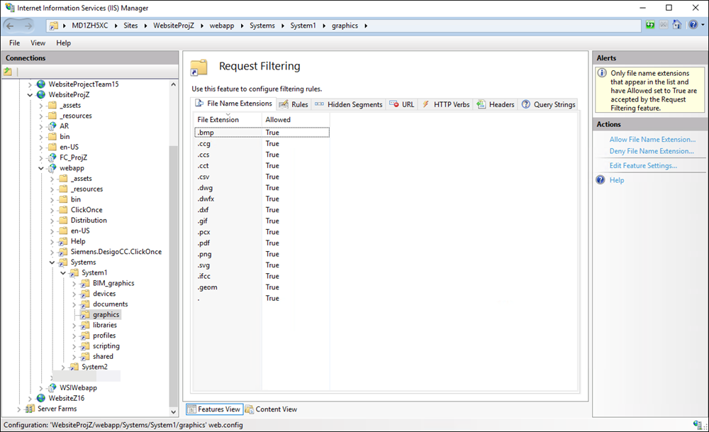

File Transfer Between a Web Server (IIS) and a Windows App Client Fails with HTTP 404 Error Code
Problem: File Transfer Between a Web Server (IIS) and a Windows App Client Fails with HTTP 404 Error Code
Solution: The web server (IIS) provides Windows App clients access to files in the project directory. Since file transfer is a potential security risk, file transfer via IIS is restricted to specific file types. The restriction is set only on those virtual directories in IIS that provide write access to clients. IIS responds with an HTTP 404 error, if a client attempts to access or to upload a file of a different type. Depending on the workflow this error gets reported to the operator at the client, or gets added to the log file on the server.
A list of such allowed file types is maintained in a web.config file of a virtual directory under
[Installation drive:]\[Installation folder]\[Project folder]\[VirtualDirectoryFolder] .
The Virtual Directory Folder can be devices, graphics, libraries and profiles.
List of Allowed File Types for Transfer | |
Virtual Directory Name | Allowed File Types |
devices | *.snmp |
graphics | *.bmp |
libraries | *.avi |
profiles | *.ldl |

NOTE:
Extension modules can add further virtual directories with different file type restrictions to the web application.
The allowed file types for each virtual directory mentioned in the web.config file are also configured in IIS using the Request Filtering feature, thus ensuring file transfer only for the specified file types. Note that no request filtering is configured for the shared and documents virtual directories as these are read-only directories. To view the allowed file types for a virtual directory in IIS, do the following:
- From the Windows Start menu, select Control Panel.
- Double-click Administrative Tools, and double-click Internet Information Services (IIS) Manager.
- In the IIS Manager window, expand the node for your Web Server in the Connections pane and expand Sites > [Website Name] > [Web Application Name] > [Virtual Directory Name].
- Select the Request Filtering feature and from the Actions pane, click Open Feature.
- The configured file types for the selected virtual directory display.
